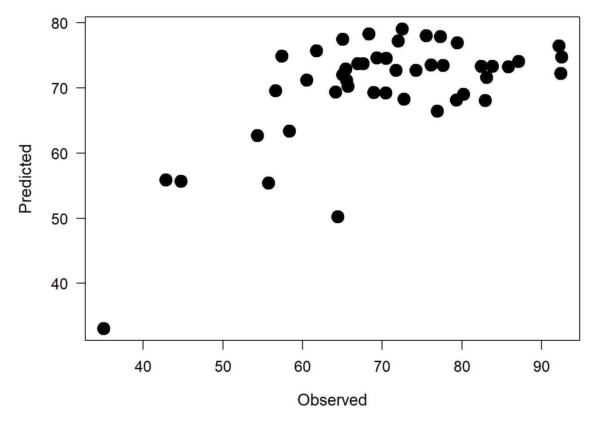
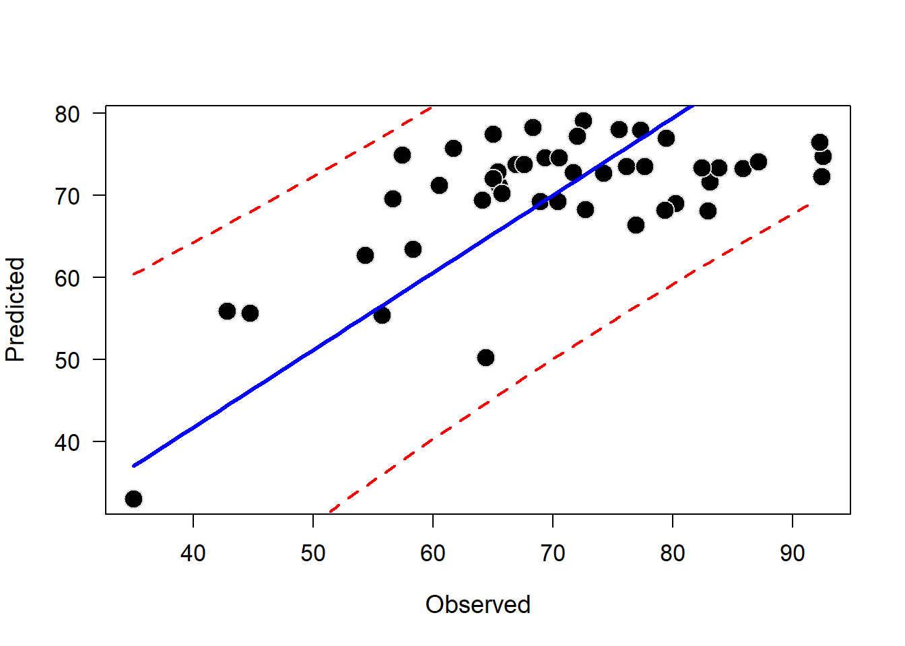
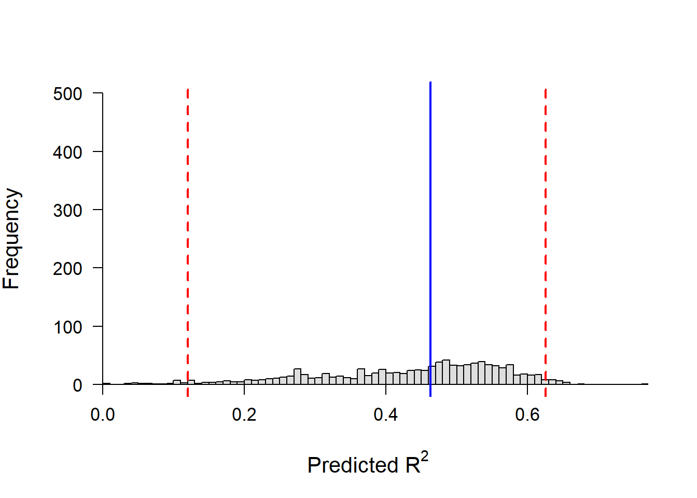

Model selection

Introduction
As we have learned in the past couple weeks, we often encounter situations for which there are mulitiple, competing hypotheses about what factors, or combinations of factors, best explain the observed patterns in our response of interest. This uncertainty can arise for one of two primary reasons:
1. Complexity of the study system
Biological systems are complex, and often we are interested in which factor, or set of factors, best predict the patterns we observe in the natural world. In carefully designed experiments, we might be interested in evaluating competing hypotheses about mechanistic drivers of biological phenomena. In complex observational studies, we might simply wish to know what factor or subset of possible factors best predicts the patterns we observe, with the understanding that these findings cannot necessarily be used to infer causality (or ‘mechanism’).
2. Collinearity
Oh, snap! What did he just say? Collinearity is the idea that certain explanatory variables are related to one another. I know, I know; last week I told you that the independence of observations was one of the fundamental assumptions that we make about linear models. That is, all observations are sampled independently from one another. This is a nice ideal, and in certain experimental designs that are “orthogonal”, we can ensure that variables are not collinear. But, in the real world, this is almost never the case.
Model selection offers a means for us to weigh the information redundancy and effects of collinearity against the information that is gained as a result of including explanatory variables that are related to one another. In real-world cases, our best model will almost always fall somewhere between a model that contains all of the variables we want to include, and a model that contains only one of those variables.
Methods for model selection
Here, we discuss approaches for applying our model-selection tool of choice. As always, I know it is hard to believe, but there is some controversy as to which method of model selection is best for a given situation. Generally speaking, there are 3 major classes of methods for model selection: step-wise selection, all possible subsets, and a priori subsets.
Stepwise selection- a limited treatment
The basic idea behind stepwise selection is that we wish to create and test models in a variable-by-variable manner until only relevant variables are left in the model. The relevance of each variable is evaluated in turn relative to some pre-determined criterion.
While convenient, this approach has some well-known pitfalls. For example, it is easy to miss out on important relationships that are not considered because of the automated inclusion or exclusion of ‘significant’ explanatory variables and the order in which they are entered or dropped. This tool also does not include interaction terms that might be of biological interest by default.
Forward selection
We start by making a “null” model with none of our variables (a model of the mean) and a full model with all of our explanatory variables.
null=lm(Fertility~1, data=swiss) # 1 means include no x's
full=lm(Fertility~., data=swiss) # Dot means include all x'sNow we perform the forward selection.
step(null, scope=list(lower=null, upper=full), direction ='forward')
Start: AIC=238.35
Fertility ~ 1
Df Sum of Sq RSS AIC
+ Education 1 3162.7 4015.2 213.04
+ Examination 1 2994.4 4183.6 214.97
+ Catholic 1 1543.3 5634.7 228.97
+ Infant.Mortality 1 1245.5 5932.4 231.39
+ Agriculture 1 894.8 6283.1 234.09
<none> 7178.0 238.34
Step: AIC=213.04
Fertility ~ Education
Df Sum of Sq RSS AIC
+ Catholic 1 961.07 3054.2 202.18
+ Infant.Mortality 1 891.25 3124.0 203.25
+ Examination 1 465.63 3549.6 209.25
<none> 4015.2 213.04
+ Agriculture 1 61.97 3953.3 214.31
Step: AIC=202.18
Fertility ~ Education + Catholic
Df Sum of Sq RSS AIC
+ Infant.Mortality 1 631.92 2422.2 193.29
+ Agriculture 1 486.28 2567.9 196.03
<none> 3054.2 202.18
+ Examination 1 2.46 3051.7 204.15
Step: AIC=193.29
Fertility ~ Education + Catholic + Infant.Mortality
Df Sum of Sq RSS AIC
+ Agriculture 1 264.176 2158.1 189.86
<none> 2422.2 193.29
+ Examination 1 9.486 2412.8 195.10
Step: AIC=189.86
Fertility ~ Education + Catholic + Infant.Mortality + Agriculture
Df Sum of Sq RSS AIC
<none> 2158.1 189.86
+ Examination 1 53.027 2105.0 190.69
Call:
lm(formula = Fertility ~ Education + Catholic + Infant.Mortality +
Agriculture, data = swiss)
Coefficients:
(Intercept) Education Catholic Infant.Mortality Agriculture
62.1013 -0.9803 0.1247 1.0784 -0.1546 Here, we see that the best model is that which includes the additive effects of Education, Catholic, Infant.Mortality, and Agriculture.
Backward selection
We can do backward selection using just the full model.
step(full, data=swiss, direction = 'backward')
Start: AIC=190.69
Fertility ~ Agriculture + Examination + Education + Catholic +
Infant.Mortality
Df Sum of Sq RSS AIC
- Examination 1 53.03 2158.1 189.86
<none> 2105.0 190.69
- Agriculture 1 307.72 2412.8 195.10
- Infant.Mortality 1 408.75 2513.8 197.03
- Catholic 1 447.71 2552.8 197.75
- Education 1 1162.56 3267.6 209.36
Step: AIC=189.86
Fertility ~ Agriculture + Education + Catholic + Infant.Mortality
Df Sum of Sq RSS AIC
<none> 2158.1 189.86
- Agriculture 1 264.18 2422.2 193.29
- Infant.Mortality 1 409.81 2567.9 196.03
- Catholic 1 956.57 3114.6 205.10
- Education 1 2249.97 4408.0 221.43
Call:
lm(formula = Fertility ~ Agriculture + Education + Catholic +
Infant.Mortality, data = swiss)
Coefficients:
(Intercept) Agriculture Education Catholic Infant.Mortality
62.1013 -0.1546 -0.9803 0.1247 1.0784 In this case we end up with the same model. Note that this is not always the case.
All possible models (all subsets)
Just as the name states- compare all possible combinations of variables. This is largely an exploratory approach or is reserved for cases in which we care solely about prediction.
We will not discuss these techniques in this class because 1) they are usually not needed 2) they can lead to laziness in formulation of hypotheses and in a worst case data dredging, and 3) plain and simple: there are just better tools available for these purposes now (e.g. GAMM, CART, and network analysis).
A priori model subsets
Consideration of only those models for which we have a priori reasons for inclusion. These are usually models that are designed to represented competing [biological] hypotheses or to balance those hypotheses within a framework for testing.
Multi-phase (heirarchical) selection
More later in the course…maybe
Essentially, this means that we impose some kind of hierarchy on the steps we take to test competing hypotheses. For instance, we might first wish to compare hypotheses about some process that we think is of greatest relevance, or some kind of underlying phenomenon that must be accounted for prior to investigating biological questions (e.g., detection probabilities in mark-recapture models). Then, we can use the best model(s) from that set of hypotheses as the basis for testing hypotheses about other processes of interest, taking into account previous findings. This becomes important if we are thinking about collinear effects of different explanatory variables on multiple (usually categorical) outcomes.
Single-phase selection
We will discuss this in detail below.
Tools for a priori model selection
Here, we will focus on a few common approaches to model selection that can be useful in different situations. Although it is a popular alternative, we will not discuss Mallow’s Cp because it involves ‘all subset’ regression and we don’t want to get into that if we can help it. In truth, there are a limited number of exploratory purposes for which this selection method is useful, and in those cases thoughtful study design and alternative statistical approaches are often superior than throwing spaghetti at the wall and looking to see what sticks.
We will examine:
Adjusted R2
PRESS statistic
AIC
Let’s check some of these tools out!
Start by fitting some models, we will use the swiss data again this week for the purpose of demonstrating selection tools because it is a noisy data set with lots of complexity.
data('swiss')
# Fit the model that tests the
# effects of education on the fertility index
mod.Ed = lm(Fertility~Education, data=swiss)
# Fit another model that tests
# effects of % Catholic on Fertility
mod.Cath = lm(Fertility~Catholic, data=swiss)
# Fit a model with additive effects
# of both explanatory variables
mod.EdCath = lm(Fertility~Education + Catholic, data=swiss)
# Fit a model with multiplicative
# effects of both explanatory variables
mod.EdxCath = lm(Fertility~Education*Catholic, data=swiss)Now we have four models that represent competing hypotheses:
1.Education alone is the best explanation among those considered for variability in fertility.
2.Percent Catholic alone is the best explanation among those considered for variability in fertility.
3.The additive effects of Education and percent Catholic are the best explanation among those considered for variability in fertility.
4.The interactive effects of Education and percent Catholic are the best explanation among those considered for variability in fertility.
Great, but how can we evaluate which of these hypotheses is best supported by our data?
# Let's start by making all of our models into a list
mods = list(mod.Ed, mod.Cath, mod.EdCath, mod.EdxCath)
# We'll give the list some names, too
names(mods) = c('Ed', 'Cath', 'EdCath', 'EdxCath')Adjusted R2
This offers a relatively simple tool for model selection, and balances the number of parameters in the model with the number of observations in our data.
Just as before, we can look at the summary of our model objects that we have stored in this list.
# Education only model, we can take a look, like this
summary(mods$Ed)
Call:
lm(formula = Fertility ~ Education, data = swiss)
Residuals:
Min 1Q Median 3Q Max
-17.036 -6.711 -1.011 9.526 19.689
Coefficients:
Estimate Std. Error t value Pr(>|t|)
(Intercept) 79.6101 2.1041 37.836 < 2e-16 ***
Education -0.8624 0.1448 -5.954 3.66e-07 ***
---
Signif. codes: 0 '***' 0.001 '**' 0.01 '*' 0.05 '.' 0.1 ' ' 1
Residual standard error: 9.446 on 45 degrees of freedom
Multiple R-squared: 0.4406, Adjusted R-squared: 0.4282
F-statistic: 35.45 on 1 and 45 DF, p-value: 3.659e-07
# REMEMBER: this model is an object stored in R,
# so we can also look at the names of this summary,
# like this
names(summary(mods$Ed))
[1] "call" "terms" "residuals" "coefficients" "aliased" "sigma" "df" "r.squared" "adj.r.squared" "fstatistic" "cov.unscaled" Whoa, this is some heavy stuff. To recap, we have made a list of models, each of which are stored in R as lists. Each model has lots of elements, one of which is the summary of the model, which has its own elements that are named.
# Here, we see that we can extract the adjusted
# R-squared directly from the model summary
summary(mods$Ed)$adj.r.squared
[1] 0.4281849
summary(mods$Cath)$adj.r.squared
[1] 0.1975591
summary(mods$EdCath)$adj.r.squared
[1] 0.5551665
summary(mods$EdxCath)$adj.r.squared
[1] 0.5700628When we compare adjusted R2, the model with the highest R2 is the “best model”. So, in this case, we would conclude that EdxCath is the best model.
PRESS statistic (Predicted sum of squares)
To use the PRESS statistic in R, we need to load a new package. Yay!
#install.packages('qpcR')
library(qpcR)
# Let's start with a single example.
# Here, we are given three things in the
# output from the 'PRESS' function.
PRESS(mods$Ed)
.........10.........20.........30.........40.......
$stat
[1] 4323.733
$residuals
[1] 11.1787318 11.5065064 17.7278799 12.5398747 10.4882280 2.5911695 10.4885953 20.1597326 9.0526997 14.8302796 13.0168641 -5.2753911 -6.8447158 -0.3698141 -14.0142691 -9.9871628
[17] -1.0354472 0.2588946 -8.4026213 -6.9021136 -5.6071189 -12.4751694 -12.9403552 -17.5105794 -6.5399771 1.5243571 -5.2119131 -10.7169905 -5.1114868 -7.4861541 -2.4853488 -5.2790448
[33] -0.6098953 -4.0456127 2.4663864 -7.0043837 15.7477692 11.1484049 1.1631787 -4.5203842 4.3983013 14.1573518 4.1296291 -6.1267680 1.9422167 -10.9733208 -13.0789076
$P.square
[1] 0.3976372
# What we are really interested in here is the
# first element in this list, the PRESS statistic.
# We can call this statistic out by name
PRESS(mods$Ed)$stat
.........10.........20.........30.........40.......
[1] 4323.733
PRESS(mods$Cath)$stat
.........10.........20.........30.........40.......
[1] 6036.623
PRESS(mods$EdCath)$stat
.........10.........20.........30.........40.......
[1] 3490.614
PRESS(mods$EdxCath)$stat
.........10.........20.........30.........40.......
[1] 3455.346The model with the lowest PRESS statistic is the best model. The meaning of this statistic is that the model is not “internally” sensitive the the data points. We can draw this interpretation because PRESS is a form of cross validation (which we will discuss later this week).
So, these are nice tools, but they are based almost exclusively on the sums of squares for our regressions, so they don’t take much into account redundancy in the parameters of the regression, and they don’t apply to models that can’t be fit with least squares estimation. This leads to some problems…
Most of the time we are using maximum likelihood estimation for these techniques, and it would be nice to have a tool that takes into account the actual likelihood of the models.
These tools don’t allow us to determine how much better one model is than another.
We have no way to communicate the uncertainty in model selection, nor any simple method for incorporating this uncertainty into our model predictions.
Information theoretic approaches
Akaike’s information criterion (AIC)
This tool (or the popular alternative, BIC) will be more useful for us during the next several weeks than any of the previous methods because it allows us to draw inference based on the likelihood of the model rather than the sums of squares, which we will learn that GLMs and other generalizations do not have!
Information-theoretic approaches to model selection are based on the trade off in information gained through addition of parameters and the added complexity of the models, with respect to sample size. I will hold off on a detailed explanation because you will learn more about this tool in your readings. So, let’s cut straight to the chase.
Remember that we made a list of a priori models above that we would like to consider.
# Get the names of those models
names(mods)
[1] "Ed" "Cath" "EdCath" "EdxCath"
# We can strip the AIC values from each
# of the model objects using a
# function from the apply family:
mapply(FUN = 'AIC', mods)
Ed Cath EdCath EdxCath
348.4223 364.3479 337.5636 336.8823 Now we have a named vector holding AIC values for each of our named models. At a glance, we can see that our model with the interaction is the ‘best’ model in the set as indicated by our other statistics, but this time it is only better by less than 1 AIC (lower AIC is better). Can we say anything about that?
Funny you should ask. Yes, we can. We have a few general rules of thumb for interpreting the AIC statistic, and we can actually derive a whole set of statistics based on these rankings.
Open can of worms…
# First, we need another library
#install.packages('AICcmodavg')
library(AICcmodavg)
# Let's start digging into this stuff
# by making a table that can help us along.
aictab(cand.set = mods, modnames = names(mods))
Model selection based on AICc:
K AICc Delta_AICc AICcWt Cum.Wt LL
EdxCath 5 338.35 0.00 0.52 0.52 -163.44
EdCath 4 338.52 0.17 0.48 1.00 -164.78
Ed 3 348.98 10.63 0.00 1.00 -171.21
Cath 3 364.91 26.56 0.00 1.00 -179.17Lots going on here…What does it all mean?
From left to right
First, notice that the rownames are actually our model names
K is the number of parameters in each of the models
AICc is the AIC score, but it is corrected for sample size. Generally speaking, this means models with many parameters and small number of observations are penalized for potential instability in the likelihood. In general, using the AICc is almost always a practical approach because it is conservative and the effect of the penalty goes away with sufficiently large sample sizes.
Delta_AICc is the difference in AICc between the best model and each of the other models.
AICcWt is the probability that a given model is the best model in the candidate set.
Cum.Wt is the cumulative weights represented by each of the models from best to last. This can be used to create a 95% confidence set of models.
LL is the log likelihood of each model, the very same discussed at the beginning of our discussions about probability distributions!
Interpreting the model selection table
In general:
A lower AIC is better.
Models with \(\Delta\)AICc of less than 2.0 are considered to have similar support as the best model. Models with \(\Delta\)AICc from 2 to 4 have some support in the data, but not as much. Models with \(\Delta\)AICc > 4 have virtually no support.
The ratio of AIC weights (wi)can be used to interpret the improvement between the best model and each subsequent model. In this example, the best model is only \(\frac{0.52}{0.48} = 1.08 \times\) better supported than the next best model, but the best two models have all of the support.
Our results suggest that Education and Catholic are the both important in explaining the variation in Fertility, because both are included in any model receiving any support in the candidate set.
Unlike our previous results, we have no clear winner in this case, and we are left wondering whether it is the additive effects or the multiplicative effects of Education and Catholic that are important. But, we still may want to get estimates for our main effects, at least, so we can make some good solid inference on the effect sizes. If only we had a method for dealing with this uncertainty now…Oh wait, we do!
Using model averaging to account for the model uncertainty, we can see that the unconditional confidence interval for Education is negative and does not overlap zero, and the opposite trend is evident in the trend for Catholic. We also find out that the interaction between Education and Catholic is actually not significant, which is probably why the main effects model had equivelent support in the candidate set.
modavg(mods, parm = 'Education', modnames = names(mods),
conf.level = .95, exclude = TRUE)
Multimodel inference on "Education" based on AICc
AICc table used to obtain model-averaged estimate:
K AICc Delta_AICc AICcWt Estimate SE
Ed 3 348.98 10.63 0.00 -0.86 0.14
EdCath 4 338.52 0.17 0.48 -0.79 0.13
EdxCath 5 338.35 0.00 0.52 -0.43 0.26
Model-averaged estimate: -0.6
Unconditional SE: 0.28
95% Unconditional confidence interval: -1.14, -0.06
modavg(mods, parm = 'Catholic', modnames = names(mods),
conf.level = .95, exclude = TRUE)
Multimodel inference on "Catholic" based on AICc
AICc table used to obtain model-averaged estimate:
K AICc Delta_AICc AICcWt Estimate SE
Cath 3 364.91 26.56 0.00 0.14 0.04
EdCath 4 338.52 0.17 0.48 0.11 0.03
EdxCath 5 338.35 0.00 0.52 0.18 0.05
Model-averaged estimate: 0.15
Unconditional SE: 0.06
95% Unconditional confidence interval: 0.04, 0.26
modavg(mods, parm = 'Education:Catholic', modnames = names(mods),
conf.level = .95, exclude = TRUE)
Multimodel inference on "Education:Catholic" based on AICc
AICc table used to obtain model-averaged estimate:
K AICc Delta_AICc AICcWt Estimate SE
EdxCath 5 338.35 0 1 -0.01 0.01
Model-averaged estimate: -0.01
Unconditional SE: 0.01
95% Unconditional confidence interval: -0.02, 0Isn’t that fantastic? From here we could move on to make predictions based on the model-averaged parameter estimates using what you learned last week. But…what if we weren’t convinced so easily and wanted a reliable means of seeing how well our model actually performs now that we’ve selected one (or more)? More on this below…
The simple fact of the matter is that we have selected a “best” model, but that doesn’t mean our model is necessarily a “good” model.
Model validation
Once we have selected a best model, or a set of explanatory variables that we want to consider in our analysis, it is important that we validate that model when possible. In truth, comparison of the validity of multiple models can even be a method for model selection in itself, but we are not going to go there this semester because it would require a much richer understanding of programming than we can achieve in a week.
What is model validation?
Model validation is the use of external data, or subsets of data that we have set aside for use in assessing the predictive ability of our models. That is, we can use new data to test how well our model works for making predictions about the system of interest. Pretty cool, I know!
There are lots of different methods for model validation, each of which uses some of your data for fitting (or training) the model and then saves some of the data for predicting new observations based on your model parameters (testing). We can do this by hand if we want to, but for the sake of this course, let’s avoid the extraneous programming knowledge required for this and just use some of the built-in functions in readily available R packages.
Very generally speaking, there are a large (near-infinite) number of ways to do model validation based on how you split up your data set and how you choose to evaluate predictions. This blog gives a nice overview of these methods with the iris data set in R using the caret package.
Worked example
Let’s work an example for the models we built for the swiss data above. We do this ‘by hand’ to show how this works:
Leave-one-out cross validation
First, make a couple of empty vectors to hold our training data and our predictions.
ed.obs = c() # Will hold observation witheld for each iteration
ed.pred = c() # Will hold our prediction for each iterationNow, drop one data point, fit the model, and predict the missing data point one row at a time until you have done them all.
# Repeat this for each row of the data set
# until we have left each out
for(i in 1:nrow(swiss)){
# Sample the data, leaving out one row
# These will be our 'training data'
data.train = swiss[-i, ]
# These will be the data we use for prediction
data.pred = swiss[(rownames(swiss) %in%
rownames(data.train))==FALSE,]
# Fit the model that tests the effects of Education
# on the Fertility
mod.Ed = lm(Fertility~Education, data=data.train)
# Predict Fertility from the fitted model and store
ed.pred[i] = predict(mod.Ed, data.pred)
ed.obs[i] = data.pred$Fertility
}Now, We can look at a plot to subjectively judge the fit.
# Set plot margins
par(mar=c(5,5,1,1))
# Plot the predictions against the observed value
# that we left out, do for each iteration.
plot(ed.obs, ed.pred, pch=21, bg='black',
col='black', yaxt='n', cex=2, cex.axis=1.1,
cex.lab=1.15, ylab='Predicted', xlab = 'Observed')
# Add the rotated y-axis
axis(2, las=2, cex.axis=1.1)
We could also look at a regression of our predictions on the observed data used for predictions to see how good we are. In this case, not great!
# Fit the model
pred.line = lm(ed.obs~ed.pred)
# Summarize the model
summary(pred.line)
Call:
lm(formula = ed.obs ~ ed.pred)
Residuals:
Min 1Q Median 3Q Max
-17.2315 -6.7132 -0.8833 9.7559 20.2830
Coefficients:
Estimate Std. Error t value Pr(>|t|)
(Intercept) 4.0940 12.1637 0.337 0.738
ed.pred 0.9416 0.1722 5.468 1.91e-06 ***
---
Signif. codes: 0 '***' 0.001 '**' 0.01 '*' 0.05 '.' 0.1 ' ' 1
Residual standard error: 9.79 on 45 degrees of freedom
Multiple R-squared: 0.3992, Adjusted R-squared: 0.3858
F-statistic: 29.9 on 1 and 45 DF, p-value: 1.911e-06
# Extract the R-squared for observed vs predicted
summary(pred.line)$r.squared
[1] 0.3991715
# Plot predictive line
# Get coefficients
summary(pred.line)$coefficients
Estimate Std. Error t value Pr(>|t|)
(Intercept) 4.0939788 12.1637145 0.3365731 7.380034e-01
ed.pred 0.9416226 0.1722131 5.4677763 1.910958e-06
# Use sequence of new data
pred.pts = data.frame(seq(min(ed.obs), max(ed.obs), 1))
names(pred.pts) = 'ed.pred'
# Make predictions using coefficients from regression
pred= predict(pred.line, pred.pts, interval='prediction')
# Plot the data again (same as above)
plot(ed.obs, ed.pred, pch=21, bg='black',
col='gray87', yaxt='n', cex=2, cex.axis=1.1,
cex.lab=1.15, ylab='Predicted', xlab = 'Observed')
axis(2, las=2, cex.axis=1.1)
# Plot the lines
lines(pred.pts[,1], pred[,1], col = 'blue', lty=1, lwd=3)
lines(pred.pts[,1], pred[,2], col = 'red', lty=2, lwd=2)
lines(pred.pts[,1], pred[,3], col = 'red', lty=2, lwd=2)
There are lots of other takes on cross-validation, including popular approaches such as k-fold cross-validation, and a number of simulation-based tools: many of which can be implemented in wrappers available through various R packages. I will leave you to explore these in your leisure time. In general, the more data that are set aside, the more robust the validation is, but we usually don’t want to set aside so much of our data that the training model isn’t representative of the data we’ve collected.
Boot-strapping method
Boot strapping (or “jack-knifing”) is similar to cross validation in that we leave out some chunk of data and fit a model. The only difference here is that we are randomly selecting the training data each time, rather than working our way through the data systematically. The only difficulty now becomes choosing the appropriate amount of data to leave out for this validation tool…
# First, make an empty vector to
# hold our training and predicting data
p.Rsquare = c()
# We will randomly sample our data 1,000 times
for(i in 1:1000){
# Sample the data, taking only 22
# data points (about half the data).
# These will be our 'training data'
data.train=swiss[sample(nrow(swiss), 22, replace=FALSE) , ]
# These will be the data we use for prediction:
data.pred=swiss[(rownames(swiss) %in%
rownames(data.train))==FALSE,]
# Fit the model that tests the
# effects of education on the fertility index
mod.Ed = lm(Fertility~Education, data=data.train)
# Predict fertility from the fitted
# model and store the result
ed.pred = predict(mod.Ed, data.pred)
ed.obs = data.pred$Fertility
# Get predictive R-squared
p.Rsquare[i] = summary(lm(ed.pred~ed.obs))$r.squared
}We can now calculate the median predicted R-squared and the 95% CI on this test statistic
median(p.Rsquare)
[1] 0.4573896
quantile(p.Rsquare, probs = c(0.025, 0.975))
2.5% 97.5%
0.1122538 0.6168014 We can look at the distribution of our r-squared values for regressions that measure the fit between our predictions and our observations.
# Plot the histogram
hist(p.Rsquare, breaks=100, yaxt='n', xaxt='n',
ylim=c(0,5e2), xlim=c(0,.75), col='gray87',
xlab = expression('Predicted R'^'2'),
main='', cex.lab=1.3)
# Add some axis labels in position them
# in the correct spot
axis(1, cex.axis=1.1, pos=0)
axis(2, las=2, cex.axis=1.1, pos=0)
# Add a blue vertical line for the median
# of our predicted R-squared
abline(v=median(p.Rsquare),
col='blue', lty=1, lwd=2)
abline(v=quantile(p.Rsquare, c(0.025, 0.975)),
col='red', lty=2, lwd=2) 
This approach is not only useful for cross-validation, but can also be a good tool for assessing a priori statistical power based on some estimates of variance, effect sizes, and variable sample sizes. We recently used the approach to do this for community metrics in brook trout streams in NY so we could determine what sampling intensity was needed to detect biologically meaningful responses to acid rain recovery. Such investigations allow us to plan our studies ahead of time and potentially save time and money, in addition to serving as validation tools.
This work is licensed under a Creative Commons Attribution 4.0 International License. Data are provided for educational purposes only unless otherwise noted.